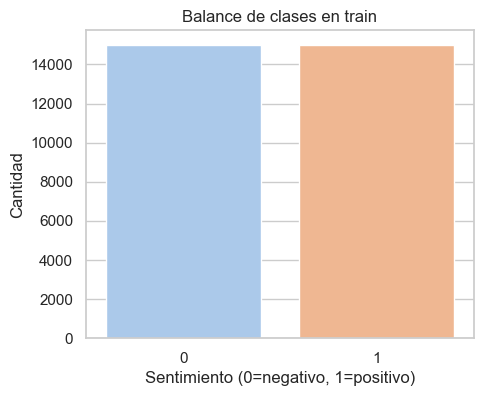
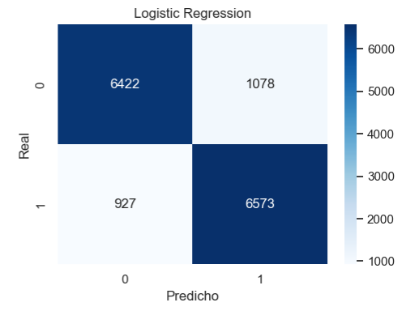
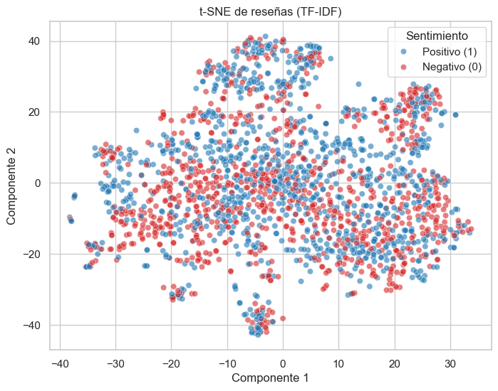
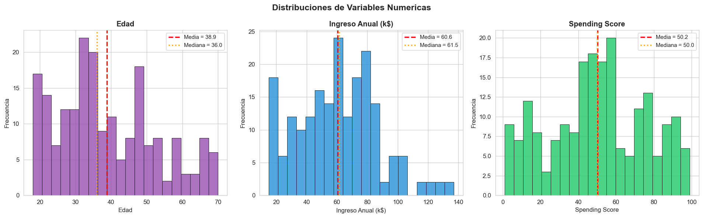
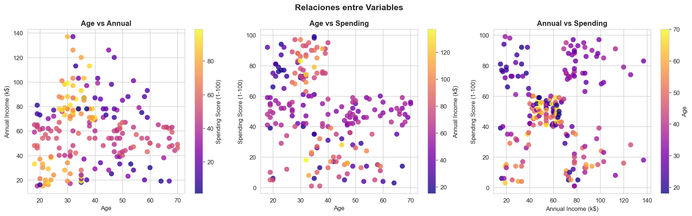
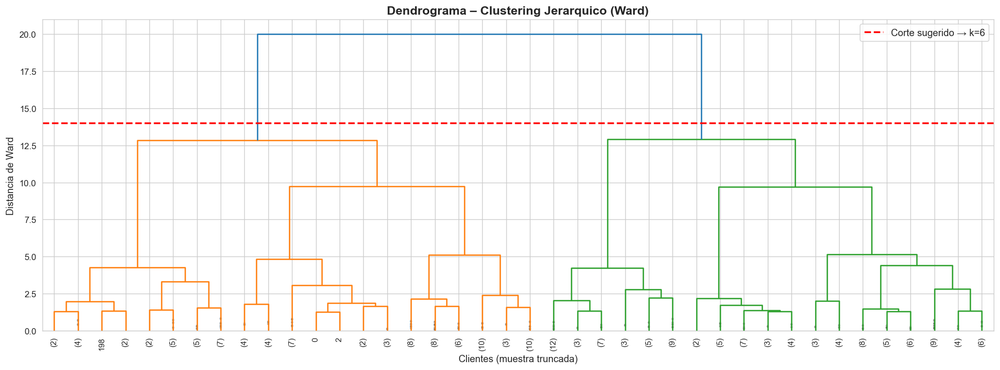

Aprendizaje supervisado y no supervisado con Python
Estudiante: [NOMBRE DEL ESTUDIANTE]
Curso: [CURSO / INSTITUCIÓN]
Datasets: Amazon Reviews + Mall Customers
Enfoque: texto, clasificación, clustering
Predecir una etiqueta conocida a partir de texto.
Descubrir grupos sin etiquetas previas.
Transformar datos en decisiones y narrativas accionables.
Idea clave: datos limpios + buenas métricas + visualización clara.
Dataset: Amazon Reviews (texto + etiqueta).
Objetivo: clasificar reseñas en positivas o negativas.
Tipo: aprendizaje supervisado.
Muestra usada: train=30000, test=15000.
Reto: texto ruidoso, vocabulario grande, contexto perdido.

Rápido, fuerte baseline para texto.
Lineal, interpretable, buen equilibrio.
Maximiza margen, robusto en alta dimensión.
Accuracy 0.866 | F1 0.866
Accuracy / F1
Accuracy / F1
TN = 6422
FP = 1078
FN = 927
TP = 6573
Tendencia: FP > FN (sesgo a predecir positivo).


Dataset: Mall Customers (200 clientes).
Variables: Age, Annual Income (k$), Spending Score.
Objetivo: segmentar clientes por comportamiento.
Tipo: aprendizaje no supervisado.
Uso final: perfiles para marketing y estrategia.


K óptimo = 6 (Silhouette 0.4274).
eps = 0.7035, clusters = 1, ruido = 14.
Ward con k = 6 (Silhouette 0.4201).

Silhouette
Silhouette
Varianza explicada
| Modelo | Clusters | Silhouette | Davies-Bouldin | Calinski |
|---|---|---|---|---|
| K-Means | 6 | 0.4274 | 0.8277 | 135.1 |
| DBSCAN | 1 | 0.0000 | 0.0000 | 0.0 |
| Jerárquico | 6 | 0.4201 | 0.8521 | 128.0 |
| Cluster | Edad | Ingreso (k$) | Spending | Segmento |
|---|---|---|---|---|
| 0 | 41.9 | 88.9 | 17.0 | Alto Ingreso / Conservador |
| 1 | 56.3 | 54.3 | 49.1 | Ingreso y Gasto Moderados |
| 2 | 25.2 | 25.8 | 76.9 | Bajo Ingreso / Alto Gasto |
| 3 | 32.7 | 86.5 | 82.1 | Alto Ingreso / Premium |
| 4 | 26.7 | 57.6 | 47.8 | Ingreso y Gasto Moderados |
| 5 | 45.5 | 26.3 | 19.4 | Bajo Ingreso / Bajo Gasto |
| Aspecto | Ejercicio 3 (Clasificación) | Ejercicio 4 (Clustering) |
|---|---|---|
| Objetivo | Predecir sentimiento | Descubrir segmentos |
| Datos | Texto + etiqueta | Numéricos sin etiqueta |
| Métricas | Accuracy, F1, matriz | Silhouette, DB, PCA |
| Resultado clave | LR accuracy 0.866 | K-Means k=6, Sil 0.427 |
| Uso final | Clasificar opiniones | Definir perfiles de clientes |
Limitaciones: modelos lineales y sensibilidad a hiperparámetros.